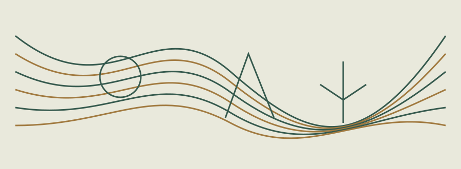
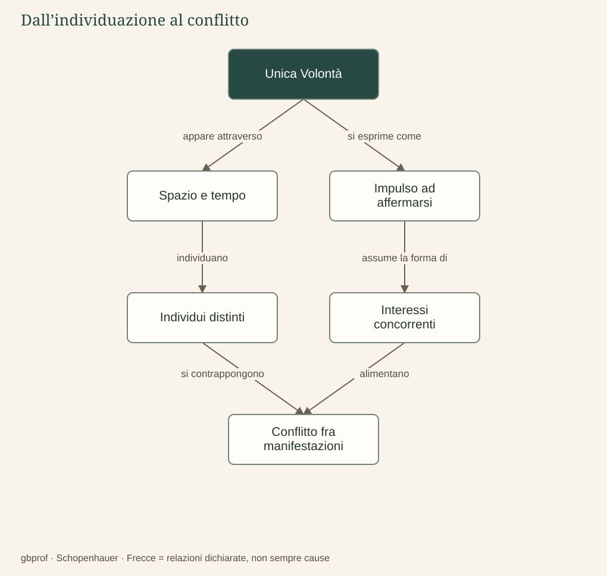

A · Comprendere Schopenhauer · 05
Individuazione e conflitto
Se la realtà profonda è una, perché gli individui si combattono?
La vita quotidiana ci presenta esseri distinti, ciascuno occupato a difendere la propria esistenza. Un animale si nutre di un altro; due persone competono per una risorsa; un organismo conserva la propria struttura attraverso processi che consumano ciò che lo circonda. Se la Volontà è una, queste opposizioni sembrano contraddire l’unità del fondamento. La risposta di Schopenhauer dipende dalla distinzione fra ciò che la realtà è in sé e il modo nel quale appare nella molteplicità dei fenomeni.
Il principio di individuazione
Spazio e tempo costituiscono il principium individuationis: rendono possibile che ciò che appare venga distinto in individui situati qui o là, prima o dopo. Due esseri occupano posizioni differenti e conducono vite differenti; ciascuno vive il proprio dolore come immediato, mentre incontra quello altrui attraverso segni esterni. Questa separazione non è un errore eliminabile con una correzione ottica, ma appartiene alla struttura dell’esperienza.
L’individuazione non crea, da sola, l’egoismo come una causa meccanica inevitabile. Rende però comprensibile la prospettiva nella quale ogni individuo considera il proprio essere come centro decisivo e gli altri come mezzi, ostacoli o concorrenti. Il suo dolore gli appare incomparabilmente più urgente proprio perché lo conosce dall’interno. L’egoismo consiste nell’assumere tale distanza come assoluta, riconoscendo agli altri un valore soltanto subordinato al proprio interesse.
Una forza che entra in conflitto con se stessa
La Volontà si manifesta in individui che devono contendersi materia, spazio e possibilità di vita. Il conflitto non oppone pertanto due principi metafisici originariamente nemici, uno buono e uno cattivo: è la stessa essenza che, nella pluralità delle sue manifestazioni, si contrappone a se stessa. L’unità del fondamento non garantisce armonia; può spiegare, al contrario, il carattere tragico di un mondo nel quale vivere comporta spesso danneggiare altre forme di vita.
La «lotta per l’esistenza» va letta qui nel contesto del sistema schopenhaueriano. Non è opportuno proiettare automaticamente sul filosofo la teoria darwiniana della selezione naturale, né trasformare la sua descrizione in una giustificazione morale del più forte. Dal fatto che esista il conflitto non segue che opprimere sia giusto. La possibilità della compassione dipenderà proprio dal riconoscimento di qualcosa che la prospettiva egoistica non vede.
Possiamo mettere alla prova il problema con un esempio quotidiano: se un compagno fallisce una prova dalla quale dipende anche il nostro vantaggio, possiamo considerare la sua difficoltà soltanto come una buona notizia per noi, oppure riconoscervi una sofferenza che conta indipendentemente dal risultato della competizione. La seconda possibilità non abolisce la distinzione fra persone, ma interrompe la pretesa che soltanto una di esse abbia piena realtà morale.

Dopo la lettura
Mappa di sintesi


Leggi la mappa in forma testuale
- Unica Volontà appare attraverso Spazio e tempo.
- Unica Volontà si esprime come Impulso ad affermarsi.
- Spazio e tempo individuano Individui distinti.
- Impulso ad affermarsi assume la forma di Interessi concorrenti.
- Individui distinti si contrappongono Conflitto fra manifestazioni.
- Interessi concorrenti alimentano Conflitto fra manifestazioni.
Fermati sul problema
Come può una sola Volontà manifestarsi nel conflitto?
Confronta il tuo ragionamento
Gli individui distinti nello spazio e nel tempo affermano interessi concorrenti. La molteplicità è fenomenica: l’unità metafisica non garantisce armonia tra le manifestazioni.